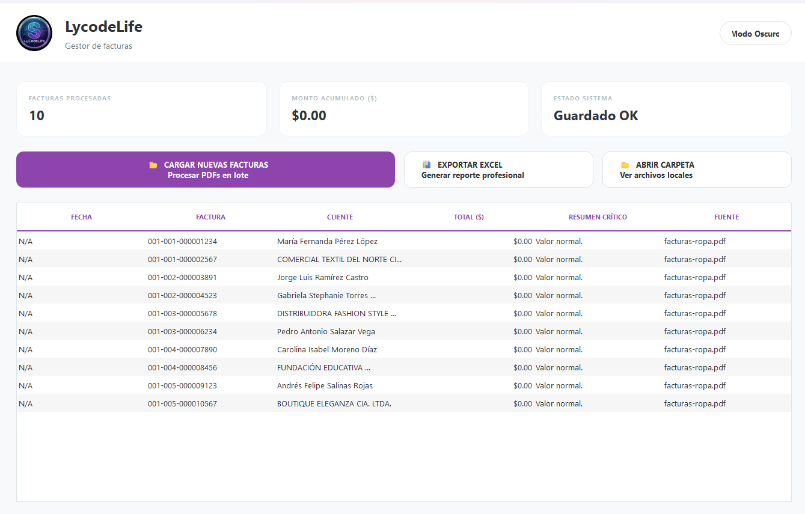

B2B Process Automation Services.
Stop losing money on manual tasks.
If your team spends more than 2 hours a day copying data, cleaning Excel sheets, or sending repetitive messages, you are losing thousands of dollars a year. I develop custom scripts that do that work in seconds.
Typical Results for My Clients
Robotic Process Automation (RPA) for Bottlenecks
Human talent is expensive. Why use it to act like a robot? I automate the manual processes that are holding back your company's growth.
Automated Data Extraction (Web Scraping)
I extract data from hundreds of PDFs, websites, or emails simultaneously and inject them directly into your CRM or database. Zero typos.
WhatsApp Bots & Bulk Notifications
Systems that send 100% personalized WhatsApp messages or emails to your customer base (collections, reports, alerts) without manual intervention.
Custom Software Integrations (APIs)
I make your software talk to each other. If your ERP doesn't connect natively to your e-commerce platform, I build the invisible API bridge that links them.
Custom Automation & Scripting Portfolio
Real solutions. Real results. Native tools created for specific processes that completely eliminated manual labor.
Enterprise WhatsApp Sequencer Software
Designed for collections and sales teams. Allows sending sequences of text, images, and PDF documents to massive databases with dynamic personalization.
Return on Investment (ROI):
- Sending time reduced from 4 hours to 5 minutes.
- Humanized pauses and mitigation algorithms to drastically reduce the risk of being blocked by Meta.


Python Script for Data Sanitization & Excel
Suppliers send price lists in disastrous formats. This script automatically structures, cleans, cross-references data, and calculates margins to feed ERP systems.
Return on Investment (ROI):
- Processing of 10,000 SKUs in 3 seconds.
- Complete elimination of pricing errors.
Invoice OCR & Intelligent PDF Processing
Massive PDF document reading. The script scans entire folders of invoices, extracts the Tax ID, company name, date, and totals, and exports a clean database for the accounting team.
Return on Investment (ROI):
- +20 hours saved per week for the accounting team.
- 100% standardization of internal audits.

B2B Automation Consulting & Development
Direct communication. Zero bureaucracy. By working with me, you don't talk to account executives who don't know code. You speak directly with the Software Engineer who will solve your problem.
Technical Process Audit
We meet (or you send me a video) showing the exact manual task your team performs. I evaluate the technical feasibility and tell you exactly how much time and money I can save you.
Code Development (Python / Node / APIs)
I write the script tailored to your current infrastructure. I don't force you to switch software; I adapt my code to what you already use (Excel, SAP, Salesforce, etc.).
Server Implementation & Training
I deliver an executable or set up the script on a cloud server. I provide a 15-minute training. What used to take days will now require a single click.
Frequently Asked Questions about Automation
Resolving your technical doubts regarding our methodology and AI integration.
Who is behind LycodeLife?
What type of business processes can be automated?
How is Artificial Intelligence (AI) implemented in my company?
Is it safe to automate processes using my company's confidential data?
How long does it take to develop a custom automation?
Quote your Custom Automation Project
Tell me about your worst bottleneck. If I can't automate it, I will tell you immediately. If I can, I'll prepare a technical proposal for your business.